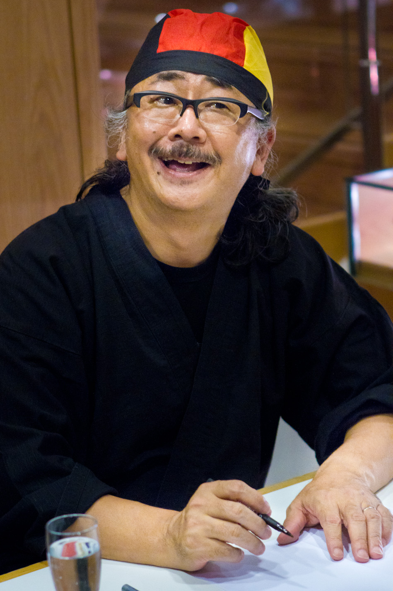

A tribute to Nobuo Uematsu the greatest composer

Nobuo Uematsu on the photo, one of the greatest video game music composers of all time.
Nobuo's participations in video games
- Genesis (1985)
- Cruise Chaser Blassty (1986)
- Alpha (1986)
- Crystal Dragon (1986)
- King's Knight Special (1986)
- King's Knight (1986)
- Aliens (1987)
- 3-D WorldRunner (1987)
- JJ (1987)
- Apple Town Story (1987)
- Cleopatra no Mahou (1987)
- Rad Racer (1987)
- Final Fantasy (1987)
- Nakayama Miho no Dokidoki High School
- Hanjuku Hero
- Final Fantasy II (1988) — regravado por Tsuyoshi Sekito no Wonderswan Color e PlayStation (2000,
2002)
- Makaitoushi SaGa (a.k.a. Final Fantasy Legend) (1989)
- Square's Tom Sawyer (1989)
- Final Fantasy III (1990) — regravado com Tsuyoshi Sekito e Keiji Kawamori para Nintendo DS (2006).
- SaGa 2 Hihou Densetsu (a.k.a. Final Fantasy Legend 2) (1991)
- Final Fantasy IV (1991)
- Final Fantasy V (1992)
- Romancing SaGa 2 (1993) — com Kenji Ito
- Final Fantasy VI (1994)
- Chrono Trigger (1995) — com Yasunori Mitsuda e Noriko Matsueda (também com Tsuyoshi Sekito para
PlayStation )
Refer to Nobuo Uematsu profile on Wikipedia.